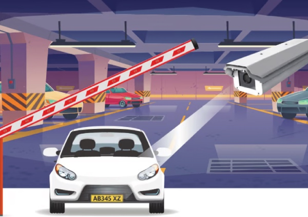

التعرف الذكي والآلي على لوحات الأرقام
نتخصص في توريد وتهيئة وصيانة أنظمة كاميرات متطورة للتعرف الآلي على أرقام ولوحات المركبات (ANPR وLPR) في المملكة العربية السعودية.
كاميرا التعرف التلقائي على لوحات المركبات
تُعد تقنية التعرف التلقائي على لوحات المركبات (ANPR) وسيلةً تعتمد على تقنية التعرف الضوئي على الحروف لقراءة لوحات تسجيل المركبات من خلال الصور. وقد أتاحت التطورات التكنولوجية المتسارعة دمج تقنية ANPR مباشرةً داخل الكاميرا نفسها، مما يتيح استخدامها على نطاق واسع لتعزيز الكفاءة ومستويات الأمان في حلول متنوعة. وعلاوة على ذلك، يُعتبر هذا النوع من الكاميرات المزوّدة بتقنية ANPR المدمجة أكثر فعالية من حيث التكلفة مقارنةً بالحلول التقليدية التي تعتمد على معالجة البيانات وتحليلها عبر الخوادم.
التقنيات الرئيسية
تتضمن حلول التعرف الآلي على لوحات المركبات (ANPR) كاميرات وبرمجيات تعمل إما داخل الكاميرا نفسها أو على خادم مركزي. وتقوم هذه الحلول بالتقاط صور لوحات المركبات تلقائياً وفي الوقت الفعلي، معتمدةً في ذلك على البيانات الضخمة ونماذج التعلم العميق المُدرَّبة بكفاءة عالية؛ كما يشتمل محرك النظام على الميزات التالية:
-
التعرف متعدد اللغات – يدعم اللغات الإنجليزية والعربية والصينية والسيريلية والتايلاندية وغيرها
-
معدل تعرف مرتفع – يتراوح بين 95% و98% للوحات التي تحتوي على أرقام وحروف
-
سرعة التعرف – تستغرق عملية القراءة الكاملة حوالي 100 مللي ثانية
-
تقنية فعالة من حيث التكلفة – تتميز بنسبة ممتازة بين السعر والأداء

يتميز برنامجنا الإداري بمرشحات سجلات قابلة للبحث، وتقارير يومية آلية عن المركبات، وأنظمة تفعيل التنبيهات، مما يجعل إدارة مواقف السيارات عملية سلسة.
من خلال دمج تقنية التقاط الصور عالية السرعة بتقنية التعرف التلقائي على لوحات المركبات (ANPR) مع معالجة الصور بالتعلم العميق، توفر ماجال دقة عالية وسرعة فائقة في كشف لوحات المركبات حتى في أصعب الظروف الجوية أو الإضاءة. صُممت أنظمتنا لتتكامل مباشرةً مع بوابات حواجز المركبات، وشاشات توجيه مواقف السيارات، وأنظمة التحكم في الدخول، مما يتيح تسجيل الدخول والخروج بشكل آلي بالكامل. سواءً كان ذلك لمواقف السيارات التجارية، أو المكاتب، أو المجمعات السكنية، نقوم بتخصيص مستشعرات الحلقة ومواقع الكاميرات لضمان أعلى معدلات نجاح في التقاط الصور.
علاوة على ذلك، تتكامل حلول ماجال للتعرف التلقائي على لوحات المركبات بسلاسة مع بنية قواعد البيانات لدعم تنبيهات القوائم البيضاء والسوداء، والتعرف على الشخصيات المهمة، وأنظمة الدفع. نقوم بتصميم شبكة تكنولوجيا المعلومات، وخوادم النظام، وهياكل قواعد البيانات المصاحبة لضمان سرعة الاستعلامات، وانخفاض زمن استجابة الشبكة، وتوافر النظام العالي. يمكن مراقبة هذه الأنظمة الشبكية وإدارتها عن بُعد من خلال لوحات تحكم مركزية سهلة الاستخدام، مما يوفر لمسؤولي الأمن لوحات معلومات فورية وتنبيهات على الهاتف المحمول لمحاولات دخول المركبات غير المصرح بها أو المدرجة في القائمة السوداء.